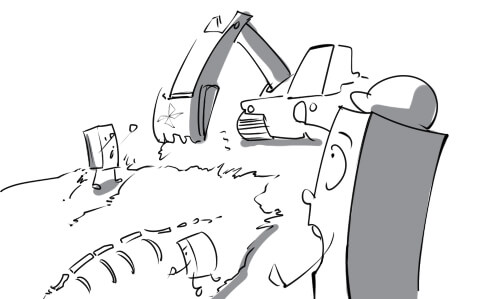
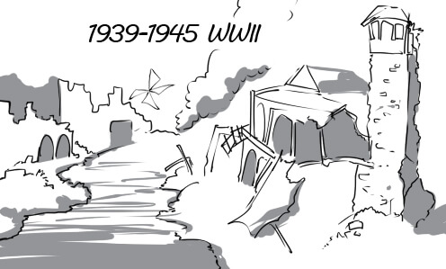
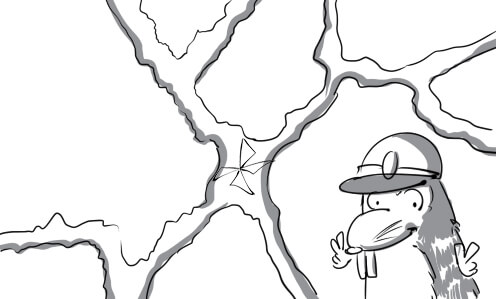

01
age: Weapons have become more and more powerful through the ages.

02
archaeologist: The archaeologist has just found a dinosaur skeleton in the valley.

03
century: My grandfather turned 100 years old today. He has lived for a whole century.
04
decade: Peter has been waiting for his wife to come back for a decade.
05
era: The death of King Quin Shi Huang marked the end of a famous era of China.
06
evidence: The archaeologist shows evidence of a mummy to his colleagues.

07
excavation: There is an interesting dinosaur fossil excavation going on in Nevada.

08
generation: Grandfather, father, son and grandson represent four generations in a family.

09
the Middle Ages: In Middle Ages, beautiful women usually became the topics of poets and painters.

10
millennium: This clay tablet was created 1,000 years ago. It is a millennium older than your iPad.

11
duration: World War II began in 1939 and ended in 1945. It means that its duration is about six years.

12
eternal: God is commonly portrayed as being eternal.
13
pioneer: His great grandfather is one of the American pioneers who settled the Old West.
14
timeline: The timeline of ancient Egypt is engraved on this stele.

15
ancient: Most of ancient animals living in the prehistoric era are very huge.
16
chronological: These files are arranged in chronological order.

17
consecutive: Picasso painted this masterpiece in five consecutive months.

18
historical: This tank was used in the historical battle between Germany and France.
19
imminent: Everybody please pay attention. The rocket launch is imminent.

20
middle-aged: The middle-aged man still stays in shape because he does exercises everyday.

21
nostalgic: Peter got nostalgic when he discovered that the place where he used to live had changed dramatically.

22
prehistoric: Prehistoric men used to rub two sticks together to make fire.
23
prior (to): Prior to 2011, there were a small number of Javan rhinoceros in Vietnam but now there are none left.
24
punctual: Her boyfriend is always punctual for their dates.

25
time-consuming: Building a pyramid is an extremely time-consuming process.
26
erode: The walls have been eroded by natural agents after 1500 years.

27
infer: From these facts Aristotle could infer that the Earth was round.

28
predate: Stone tools predate bronze tools by thousands of years.
29
span: Mr Green's teaching career has spanned 40 years and he doesn't intend to retire now.

30
previously: Ho Chi Minh city, previously known as Saigon, is the largest city in Vietnam.

31
subsequently: 65 million years ago, the Earth was hit by asteroids and subsequently dinosaurs became extinct.

32
agriculture: Approximately 80% of Vietnam's population work in agriculture sector.

33
burrow: Moles live in underground burrows and eat roots, grubs and earthworms.

34
climate: In December, the climate of Europe is really cold while that of Australia is quite hot.
35
crop(s): Rice is the most important crop in Vietnam.
_n.jpeg)
36
decline: There has been a gradual decline in the forest area of Vietnam.

37
den: He used to sleep in a bear's den when he was lost in the woods.

38
disaster: The disaster destroyed the whole city and killed thousands of people.
39
ecological balance: Over-exploiting forest resources will harm the ecological balance of our country.

40
ecology: The ecology professor is lecturing on the importance of the ecological balance.

41
evolution: The human figure has changed dramatically throughout human evolution.
42
extinction: It is said that a crash of a large meteorite with the Earth was the primary cause of dinosaur extinction.
43
fauna: This jungle has a very rich and diverse fauna.
44
flora: Thanks to the conservation program, the flora of Nam Cat Tien Nation Park still remains rich.

45
genetics: The genetics experts are conducting a delicate experiment.

46
habitat: Animals live more comfortably in their natural habitat.
47
human nature: It is really difficult to have a thorough knowledge of human nature.

48
insect: We were bothered by many insects when going camping in the woods

49
Mother Nature: Mother Nature offers mankind a great number of abundant natural resources.

50
pesticide: Using too much pesticide will poison our crops instead of protecting them

51
predator: Tiger is one of the most powerful predators in the animal kingdom.
52
prey: The big bear is attacking its prey cruelly.

53
repercussion: Building too many factories will cause repercussions for the environment.

54
scent: Insects are actually attracted by the scent of flowers.
55
vegetation: The vegetation is lush on the Gálapagos Islands

56
vermin: Grasshopper is a type of vermin that can cause considerable damage to crops.
57
weed: The garden is full of weeds. We need to clean it up now.

58
arid: People living in arid regions are suffering from water scarcity.

59
domesticated: Don't worry! Lions in the circus have been domesticated, they won't eat you.
60
endangered: The giant panda is an endangered species. There are just about 2,000 individuals living in the wild.
61
genetically-modified: Genetically-modified tomatos are bigger and sweeter than normal ones.
62
introduce: Carrot was introduced to this island by foreign guests.
63
native: Tourists really enjoy delicious native fruits and vegetables.

64
natural: Mary is tempted to buy a beautiful necklace made from natural pearls.

65
resistant: You can use this water-resistant camera to take pictures under the sea.
66
semi-arid: The rainfall is really low in the semi-arid regions in Australia.

67
tropical: Vietnam is very famous for its delicious tropical fruits.

68
vulnerable: New born deers are often vulnerable to attack.
69
adapt: Tom is very healthy, which is why he can adapt to all kinds of weather.

70
combat: The government has invested a great deal of effort in combating illegal dumping.

71
cultivate: Mr Robert cultivates some vegetables such as cabbage, carrot... in the garden.
72
eradicate: We need to eradicate illegal hunting to protect wild animals.

73
hibernate: Bears always hibernate in their caves during winter.

74
tolerate: Penguins don't live in tropical regions because they can barely tolerate the heat.

75
useless: It is useless to irrigate the dead tree, it will never come alive again.

76
viable: Bazan soil is perfect for all coffee plants to be viable.

77
vital: Human being cannot grow strong and healthy without vital factors such as water, food, vitamins…
78
worthwhile: Water, light, fertilizer and beneficial insects are worthwhile to tree growth.

79
confront: If you are a real man, you have to confront your own problems.

80
dump: Dumping rubbish on the streets will degrade our environment.

81
inexorably: Human life and the environment are inexorably linked to one another.
82
inevitably: Inevitably, this small tree will grow into a giant one in 10 years.

83
salary: Andrew receives his salary on the 22nd of the month.
84
share: Peter uses his savings to buy 50 shares of ABC corporation.
85
skill: An ambulance driver must have the skill to drive at high speeds.
86
staff: The staff is divided into many departments. Each department undertakes specific tasks.
87
supervisor: My supervisor always keeps an eye on me. I cannot do anything behind his back.

88
takeover: Google completed their takeover of Motorola Mobility in early 2012.
89
target: The manager sets high sales target for the new product and asks me to achieve it.

90
trade: We have done a lot of trade with that company.

91
trend: Manufacturing products in developing countries to exploit their cheap labor has become a business trend.

92
unemployment: Unemployment affects many people in the world. Most of them have to live in absolute poverty.
93
wage: Peter asks for his wage repeatedly because it's been two weeks since that last time he got paid.

94
workforce: The ages of people in Vietnam's workforce is between 18 and 60 years old.

95
workplace: Peter's workplace is comfortable and well equipped with modern technologies.